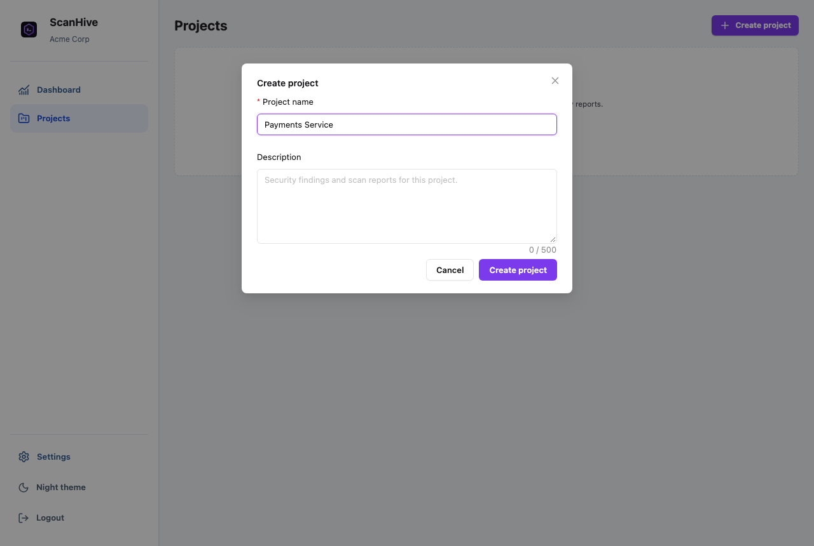
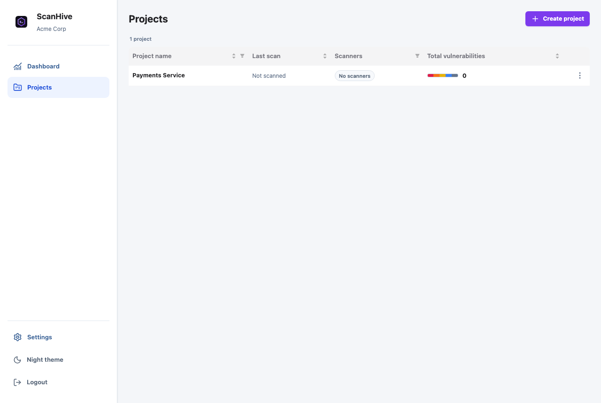
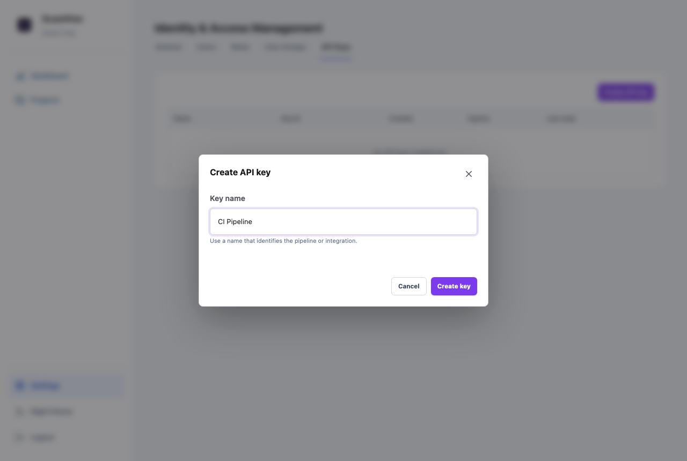
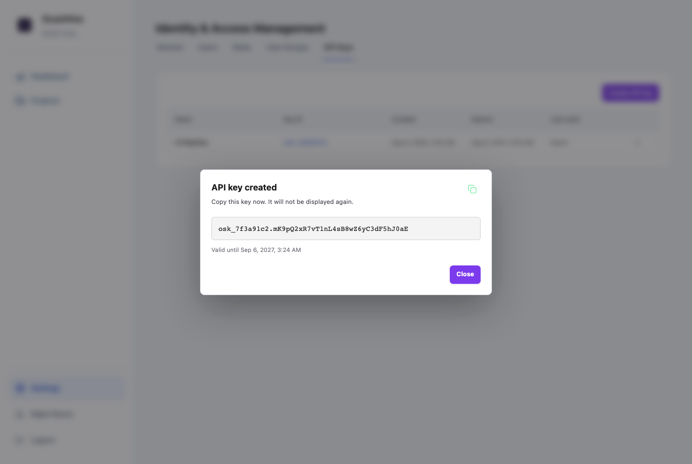

Wire up your pipeline
Push Scan Results to ScanHive
Every scan result gets into ScanHive the same way: one HTTP call to the upload endpoint, authenticated with an API key. This page covers the scan types it understands, how to get a project and a key from the UI, and a ready-to-paste Azure Pipelines task.
Supported scan types
Each upload is classified as one of six types — pick the one matching your scanner's output. Values are matched exactly, including the space in Container Security.
| Scan type | What it catches | Example tools |
|---|---|---|
SAST | Vulnerable patterns in your own source code | Semgrep, CodeQL, Checkmarx, Fortify |
SCA | Known vulnerabilities in open-source dependencies | Snyk |
Secrets | Credentials, tokens, and keys committed to the repo | Gitleaks |
Container Security | Vulnerabilities in container images and base layers | Trivy, Grype |
IaC | Misconfigurations in Terraform, CloudFormation, Kubernetes manifests | Checkov, KICS |
DAST | Runtime testing against a deployed, running application | OWASP ZAP |
Create an API key and a project
Every upload needs two things: a project to own the results, and an API key to authenticate the request.
Create a project — Projects → Create project. Project names are unique per organization and case-insensitive.


PROJECT_ID below.Create an API key — Settings → API Keys → Create API key. Keys are valid for 365 days, and the plaintext value is shown exactly once.


If a project name contains spaces (like Payments Service above), either URL-encode it or use the project's UUID instead — visible in the project's URL in the browser address bar. The tasks below don't encode the value for you.
Add it to your pipeline
Drop this into azure-pipelines.yml. Add PROJECT_ID and API_KEY as pipeline variables first (Pipeline → Edit → Variables) — mark API_KEY secret with the lock icon.
Linux & macOS agents
- task: Bash@3 displayName: 'Upload Report - ScanHive' inputs: targetType: 'inline' script: | curl --fail --silent --show-error \ --request POST \ "http://localhost:8000/api/v1/scans/upload/$(PROJECT_ID)" \ --header "X-API-Key: $(API_KEY)" \ --form "scan_type=Secrets" \ --form "file=@gitleaks.sarif"
Swap http://localhost:8000 for your real ScanHive URL, and scan_type / file to match whatever scanner produced the report for that stage.